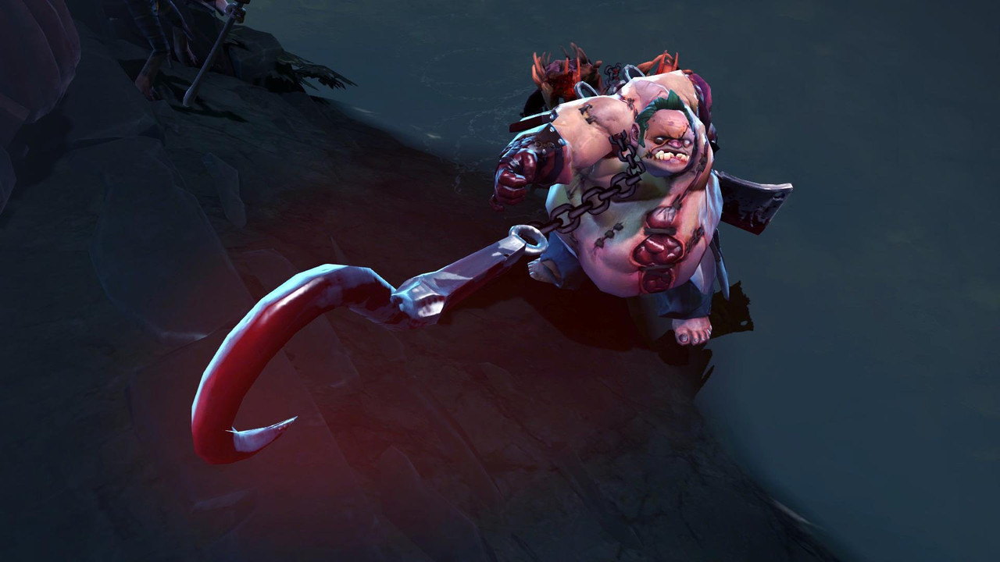

Топовые ноутбуки
в средней ценовой категории
Ноутбук Chuwi HeroBook Pro
Ноутбук Chuwi HeroBook Pro CWI514-iN40208G256G — это стильное и компактное
устройство, идеально подходящее для работы и учебы. Его легкий пластиковый корпус и тонкий профиль делают его
удобным для переноски, а диагональ экрана 14.1" с разрешением 1920 x 1080 обеспечивает яркое и четкое
изображение.С мощным процессором Intel Celeron N4020 и 8 ГБ оперативной памяти, этот ноутбук справляется с
повседневными задачами без проблем. Встроенная графика Intel UHD Graphics 600 позволяет наслаждаться
мультимедийным контентом и легкими играми. Ноутбук оснащен SSD-накопителем объемом 256 ГБ, что обеспечивает
быструю загрузку системы и приложений. Благодаря технологии IPS экран обеспечивает широкие углы обзора и яркие
цвета, а матовая поверхность уменьшает блики и отражения.
Игровой ноутбук Lenovo Legion R7000
Состояние устройства: новый. Этот игровой
ноутбук Lenovo Legion 5 R7000 готов к любым вызовам, которые вы ему поставите. Он сочетает в себе мощность и
стиль, что делает его идеальным выбором для геймеров.
Диагональ экрана 15.6" с разрешением 1920 x 1080 обеспечивает четкое и яркое изображение. Яркость экрана в 300
кд/м² и частота матрицы 144 Гц гарантируют плавность и насыщенность графики, что особенно важно в динамичных
играх.
Под капотом у Lenovo Legion 5 R7000 находится мощный процессор AMD Ryzen 7 8745H с 8 ядрами и 16 потоками,
который обеспечивает высокую производительность. Максимальная частота до 4 900 МГц позволяет справляться с
любыми задачами, от игр до ресурсоемких приложений.
Игровой ноутбук ASUS TUF Gaming A15
Игровой ноутбук ASUS TUF Gaming A15 2023 FA507NVR-LP118 — это мощное решение
для
геймеров, которые ценят производительность и надежность. С алюминиевой крышкой и прочным корпусом,
соответствующим стандарту MIL-STD-810H, он готов к любым испытаниям.
Оснащенный процессором AMD Ryzen 7 и дискретной графикой NVIDIA GeForce RTX 4060, этот ноутбук обеспечивает
отличную производительность в самых требовательных играх. С 16 потоками и 8 ядрами, он справляется с
многозадачностью и ресурсоемкими приложениями без проблем.
Экран с разрешением 1920 x 1080 и частотой обновления 144 Гц подарит вам невероятно плавное изображение.
Технология IPS обеспечивает яркие цвета и широкие углы обзора, а матовая поверхность экрана уменьшает блики,
позволяя сосредоточиться на игре.
С 32 ГБ оперативной памяти DDR5 и SSD на 512 ГБ, вы получите быструю загрузку игр и приложений, а также
достаточно места для хранения ваших данных. Два слота для SSD позволяют легко расширить память в будущем.
Итого:
- производители
- Плюсы
- Лучшие ноутбуки на рынке
- Лучшие цены
- Минусы
- Малое кол-во товара на складе

Притягивает врагов своим крюком
Каждый точный бросок знаменитого крюка вселяет страх во врагов Pudge, ведь, притянув жертву, он душит её
ядовитым газом и расчленяет её своим тесаком. С каждым убийством его здоровье и урон увеличиваются, и вскоре
погибель от его рук становится неизбежной.
Meat Hook Бросает окровавленный крюк в указанную цель или в выбранном направлении. Крюк зацепится за первое
существо, в которое попадёт, и притащит его к владельцу способности. Вражеские герои получают от крюка урон,
а крипы, не являющиеся древними, сразу погибают.

Кошки — это мелкие, плотоядные млекопитающие семейства кошачьих, являющиеся единственным одомашненным видом.
Они обладают острым ночным зрением, развитым обонянием, гибким телом и чувствительными усами (вибриссами)
для ориентации в пространстве. Кошки являются социальными животными, общающимися с помощью звуков, феромонов
и движений тела.
Кот — это мелкое, хищное млекопитающее семейства кошачьих, один из самых популярных компаньонов человека. Это
социальное животное с гибким телом, отличным ночным зрением и слухом, которое охотится в одиночку и
использует для общения разнообразные звуки и язык тела. Домашние кошки ценились за способность уничтожать
грызунов и стали распространены по всему миру.
Галерея